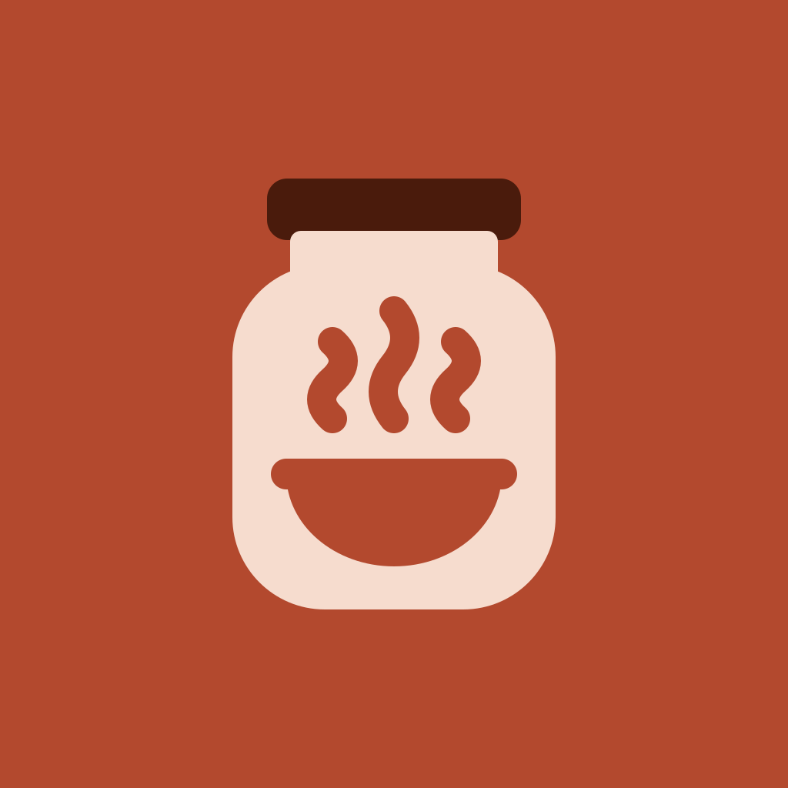

Recipantry
Recipantry, dolabındaki malzemelerle yapabileceğin tarifleri gösteren bir mobil uygulamadır. Malzemelerini seçebilir ya da dolabının fotoğrafını çekebilirsin.
Recipantry is a mobile app that shows the recipes you can cook with the ingredients you already have. Pick your ingredients or snap a photo of your fridge.
Türkçe
- Gizlilik politikası ve KVKK aydınlatma metni
- Kullanım şartları
- Hesap ve veri silme
- Destek: emre@yunusemrepak.com